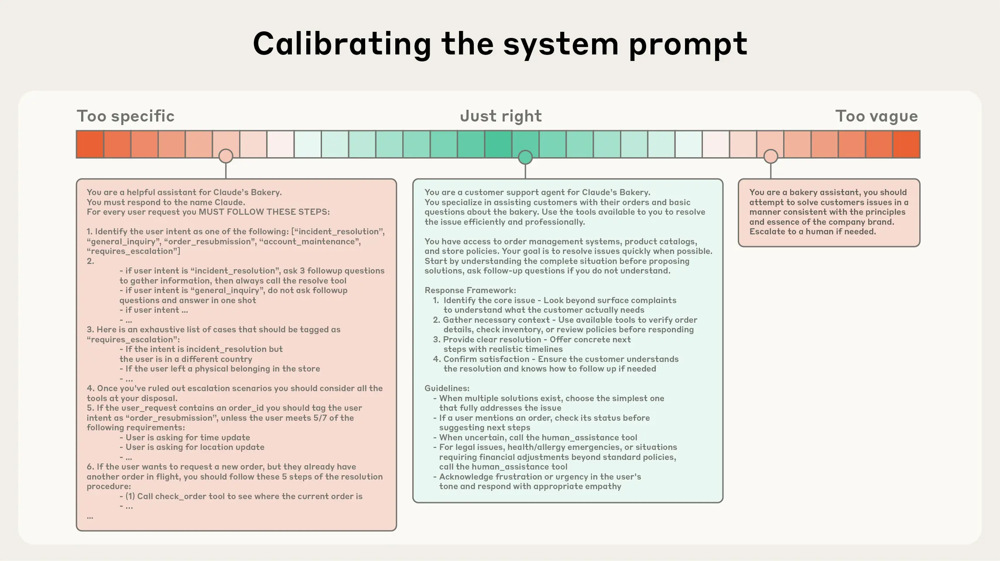
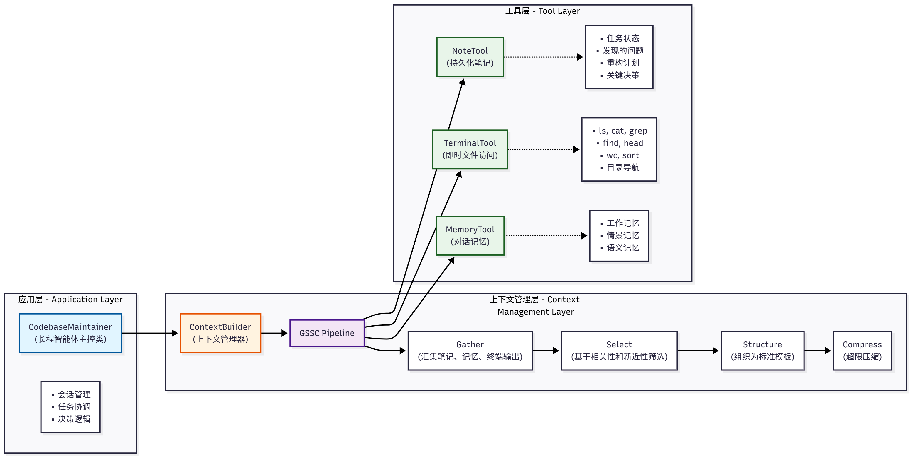

第九章 上下文工程¶
在前面的章节中，我们已经为智能体引入了记忆系统与RAG。然而，要让智能体在真实复杂场景中稳定地“思考”与“行动”，仅有记忆与检索还不够——我们需要一套工程化方法，持续、系统地为模型构造恰当的“上下文”。这就是本章的主题：上下文工程（Context Engineering）。它关注的是“在每一次模型调用前，如何以可复用、可度量、可演进的方式，拼装并优化输入上下文”，从而提升正确性、鲁棒性与效率[1][2]。
为了让读者能够快速体验本章的完整功能，我们提供了可直接安装的Python包。你可以通过以下命令安装本章对应的版本：
本章主要介绍上下文工程的核心概念与实践，并在HelloAgents框架中新增了上下文构建器和两个配套工具：
- ContextBuilder (
hello_agents/context/builder.py)：上下文构建器，实现 GSSC (Gather-Select-Structure-Compress) 流水线，提供统一的上下文管理接口 - NoteTool (
hello_agents/tools/builtin/note_tool.py)：结构化笔记工具，支持智能体进行持久化记忆管理 - TerminalTool (
hello_agents/tools/builtin/terminal_tool.py)：终端工具，支持智能体进行文件系统操作和即时上下文检索
这些组件共同构成了完整的上下文工程解决方案，是实现长时程任务管理和智能体式搜索的关键，将在后续章节中详细介绍。
除了安装框架外，还需要在.env配置LLM的API。本章示例主要使用大语言模型进行上下文管理和智能决策。
配置完成后，即可开始本章的学习之旅！
9.1 什么是上下文工程¶
在经历了数年提示工程（Prompt Engineering）成为应用型AI的焦点之后，一个新的术语开始走到台前：上下文工程（Context Engineering）。如今，用语言模型构建系统不再只是找对提示词里的句式和措辞，而是要回答一个更宏观的问题：什么样的上下文配置，最有可能让模型产出我们期望的行为？
所谓“上下文”，是指在对大语言模型（LLM）进行采样时所包含的那组 tokens。手头的工程问题，是在 LLM 的固有约束之下，优化这些 tokens 的效用，以便稳定地得到预期结果。想要有效驾驭 LLM，往往需要“在上下文中思考”——也就是说：在任何一次调用时，都要审视 LLM 可见的整体状态，并预判这种状态可能诱发的行为。

图 9.1 Prompt engineering vs Context engineering
本节将探讨正在兴起的上下文工程，并给出一个用于构建可调控、有效智能体的精炼心智模型。
上下文工程 vs. 提示工程
如图9.1所示，在现在前沿模型厂商的视角中，上下文工程是提示工程的自然演进。提示工程关注如何编写与组织 LLM 的指令以获得更优结果（例如系统提示的写法与结构化策略）；而上下文工程则是在推理阶段，如何策划与维护“最优的信息集合（tokens）”，其中不仅包含提示本身，还包含其他会进入上下文窗口的一切信息。
在 LLM 工程的早期阶段，提示往往是主要工作，因为大多数用例（除日常聊天外）都需要针对单轮分类或文本生成做精调式的提示优化。顾名思义，提示工程的核心是“如何写出有效提示”，尤其是系统提示。然而，随着我们开始工程化地构建更强的智能体，它们在更长的时间范围内、跨多次推理轮次地工作，我们就需要能管理整个上下文状态的策略——其中包括系统指令、工具、MCP（Model Context Protocol）、外部数据、消息历史等。
一个循环运行的智能体，会不断产生下一轮推理可能相关的数据，这些信息必须被周期性地提炼。因此，上下文工程的“艺与术”，在于从持续扩张的“候选信息宇宙”中，甄别哪些内容应当进入有限的上下文窗口。
9.2 为什么上下文工程重要¶
尽管模型的速度越来越快、可处理的数据规模越来越大，但我们观察到：LLM 和人类一样，在一定点上会“走神”或“混乱”。针堆找针（needle-in-a-haystack）类基准揭示了一个现象：上下文腐蚀（context rot）——随着上下文窗口中的 tokens 增加，模型从上下文中准确回忆信息的能力反而下降。
不同模型的退化曲线或许更平滑，但这一特征几乎在所有模型上都会出现。因此，上下文必须被视作一种有限资源，且具有边际收益递减。就像人类有有限的工作记忆容量一样，LLM 也有一笔“注意力预算”。每新增一个 token，都会消耗这笔预算的一部分，因此我们更需要谨慎地筛选哪些 tokens 应该被提供给 LLM。
这种稀缺并非偶然，而是源自 LLM 的架构约束。Transformer 让每个 token 能够与上下文中的所有 token 建立关联，理论上形成 (n^2) 级别的两两注意力关系。随着上下文长度增长，模型对这些两两关系的建模能力会被“拉薄”，从而自然地产生“上下文规模”与“注意力集中度”的张力。此外，模型的注意力模式来源于训练数据分布——短序列通常比长序列更常见，因此模型对“全上下文依赖”的经验更少、专门参数也更少。
诸如位置编码插值（position encoding interpolation）等技术可以让模型在推理时“适配”比训练期更长的序列，但会牺牲部分对 token 位置的精确理解。总体上，这些因素共同形成的是一个性能梯度，而非“悬崖式”崩溃：模型在长上下文下依旧强大，但相较短上下文，在信息检索与长程推理上的精度会有所下降。
基于上述现实，有意识的上下文工程就成为构建强健智能体的必需品。
9.2.1 有效上下文的“解剖学”¶
在“有限注意力预算”的约束下，优秀的上下文工程目标是：用尽可能少、但高信号密度的 tokens，最大化获得期望结果的概率。落实到实践中，我们建议围绕以下组件开展工程化建设：
- 系统提示（System Prompt）：语言清晰、直白，信息层级把握在“刚刚好”的高度。常见两极误区：
- 过度硬编码：在提示中写入复杂、脆弱的 if-else 逻辑，长期维护成本高、易碎。
-
过于空泛：只给出宏观目标与泛化指引，缺少对期望输出的具体信号或假定了错误的“共享上下文”。 建议将提示分区组织（如
、 、工具指引、输出描述等），用 XML/Markdown 分隔。无论格式如何，追求的是能完整勾勒期望行为的“最小必要信息集”（“最小”并不等于“最短”）。先用最好的模型在最小提示上试跑，再依据失败模式增补清晰的指令与示例。 -
工具（Tools）：工具定义了智能体与信息/行动空间的契约，必须促进效率：既要返回token 友好的信息，又要鼓励高效的智能体行为。工具应当：
- 职责单一、相互低重叠，接口语义清晰；
- 对错误鲁棒；
-
入参描述明确、无歧义，充分发挥模型擅长的表达与推理能力。 常见失败模式是“臃肿工具集”：功能边界模糊，导致“选哪个工具”这一决策本身就含混不清。如果人类工程师都说不准用哪个工具，别指望智能体做得更好。精心甄别一个“最小可行工具集（MVTS）”往往能显著提升长期交互中的稳定性与可维护性。
-
示例（Few-shot）：始终推荐提供示例，但不建议把“所有边界条件”的罗列一股脑塞进提示。请精挑细选一组多样且典型的示例，直接画像“期望行为”。对 LLM 而言，好的示例胜过千言万语。
总的指导思想是：信息充分但紧致。如图9.2所示，是进入运行时的动态检索。

图 9.2 Calibrating the system prompt
9.2.2 上下文检索与智能体式搜索¶
一个简洁的定义：智能体 = 在循环中自主调用工具的 LLM。随着底层模型能力增强，智能体的自治水平便可提升：更能独立探索复杂问题空间，并从错误中恢复。
工程实践正在从“推理前一次性检索（embedding 检索）”逐步过渡到“及时（Just-in-time, JIT）上下文”。后者不再预先加载所有相关数据，而是维护轻量化引用（文件路径、存储查询、URL 等），在运行时通过工具动态加载所需数据。这样可让模型撰写针对性查询、缓存必要结果，并用诸如 head/tail 之类的命令分析大体量数据——无需把整块数据一次性塞入上下文。其认知模式更贴近人类：我们不会死记硬背全部信息，而是用文件系统、收件箱、书签等外部索引按需提取。
除了存储效率，引用的元数据本身也能帮助精化行为：目录层级、命名约定、时间戳等都在隐含地传达“目的与时效”。例如，tests/test_utils.py 与 src/core/test_utils.py 的语义暗示就不同。
允许智能体自主导航与检索还能实现渐进式披露（progressive disclosure）：每一步交互都会产生新的上下文，反过来指导下一步决策——文件大小暗示复杂度、命名暗示用途、时间戳暗示相关性。智能体得以按层构建理解，只在工作记忆中保留“当前必要子集”，并用“记笔记”的方式做补充持久化，从而维持聚焦而非“被大而全拖垮”。
需要权衡的是：运行时探索往往比预计算检索更慢，并且需要有“主见”的工程设计来确保模型拥有正确的工具与启发式。如果缺少引导，智能体可能会误用工具、追逐死胡同或错过关键信息，造成上下文浪费。
在不少场景中，混合策略更有效：前置加载少量“高价值”上下文以保证速度，然后允许智能体按需继续自主探索。边界的选择取决于任务动态性与时效要求。在工程上，可以预先放入类似“项目约定说明（如 README/指南）”的文件，同时提供 glob、grep 等原语，让智能体即时检索具体文件，从而绕开过时索引与复杂语法树的沉没成本。
9.2.3 面向长时程任务的上下文工程¶
长时程任务要求智能体在超出上下文窗口的长序列行动中，仍能保持连贯性、上下文一致与目标导向。例如大型代码库迁移、跨数小时的系统性研究。指望无限增大上下文窗口并不能根治“上下文污染”与相关性退化的问题，因此需要直接面向这些约束的工程手段：压缩整合（Compaction）、结构化笔记（Structured note-taking）与子代理架构（Sub-agent architectures）。
- 压缩整合（Compaction）
- 定义：当对话接近上下文上限时，对其进行高保真总结，并用该摘要重启一个新的上下文窗口，以维持长程连贯性。
- 实践：让模型压缩并保留架构性决策、未解决缺陷、实现细节，丢弃重复的工具输出与噪声；新窗口携带压缩摘要 + 最近少量高相关工件（如“最近访问的若干文件”）。
-
调参建议：先优化召回（确保不遗漏关键信息），再优化精确度（剔除冗余内容）；一种安全的“轻触式”压缩是对“深历史中的工具调用与结果”进行清理。
-
结构化笔记（Structured note-taking）
- 定义：也称“智能体记忆”。智能体以固定频率将关键信息写入上下文外的持久化存储，在后续阶段按需拉回。
- 价值：以极低的上下文开销维持持久状态与依赖关系。例如维护 TODO 列表、项目 NOTES.md、关键结论/依赖/阻塞项的索引，跨数十次工具调用与多轮上下文重置仍能保持进度与一致性。
-
说明：在非编码场景中同样有效（如长期策略性任务、游戏/仿真中的目标管理与统计计数）。结合第八章的
MemoryTool，可轻松实现文件式/向量式的外部记忆并在运行时检索。 -
子代理架构（Sub-agent architectures）
- 思想：由主代理负责高层规划与综合，多个专长子代理在“干净的上下文窗口”中各自深挖、调用工具并探索，最后仅回传凝练摘要（常见 1,000–2,000 tokens）。
- 好处：实现关注点分离。庞杂的搜索上下文留在子代理内部，主代理专注于整合与推理；适合需要并行探索的复杂研究/分析任务。
- 经验：公开的多智能体研究系统显示，该模式在复杂研究任务上相较单代理基线具有显著优势。
方法取舍可以遵循以下经验法则：
- 压缩整合：适合需要长对话连续性的任务，强调上下文的“接力”。
- 结构化笔记：适合有里程碑/阶段性成果的迭代式开发与研究。
- 子代理架构：适合复杂研究与分析，能从并行探索中获益。
即便模型能力持续提升，“在长交互中维持连贯性与聚焦”仍是构建强健智能体的核心挑战。谨慎而系统的上下文工程将长期保持其关键价值。
9.3 在 Hello-Agents 中的实践：ContextBuilder¶
本节将详细介绍 HelloAgents 框架中的上下文工程实践。我们将从设计动机、核心数据结构、实现细节到完整案例，逐步展示如何构建一个生产级的上下文管理系统。ContextBuilder 的设计理念是"简单高效"，去除不必要的复杂性，统一以"相关性+新近性"的分数进行选择，符合 Agent 模块化与可维护性的工程取向。
9.3.1 设计动机与目标¶
在构建 ContextBuilder 之前，我们首先需要明确其设计目标和核心价值。一个优秀的上下文管理系统应该解决以下几个关键问题：
-
统一入口：将"获取(Gather)- 选择(Select)- 结构化(Structure)- 压缩(Compress)"抽象为可复用流水线，减少在 Agent 实现中的重复模板代码。这种统一的接口设计让开发者无需在每个 Agent 中重复编写上下文管理逻辑。
-
稳定形态：输出固定骨架的上下文模板，便于调试、A/B 测试与评估。我们采用了分区组织的模板结构：
[Role & Policies]：明确 Agent 的角色定位和行为准则[Task]：当前需要完成的具体任务[State]：Agent 的当前状态和上下文信息[Evidence]：从外部知识库检索的证据信息[Context]：历史对话和相关记忆-
[Output]：期望的输出格式和要求 -
预算守护：在 token 预算内尽量保留高价值信息，对超限上下文提供兜底压缩策略。这确保了即使在信息量巨大的场景下，系统也能稳定运行。
-
最小规则：不引入来源/优先级等分类维度，避免复杂度增长。实践表明，基于相关性和新近性的简单评分机制，在大多数场景下已经足够有效。
9.3.2 核心数据结构¶
ContextBuilder 的实现依赖两个核心数据结构，它们定义了系统的配置和信息单元。
（1）ContextPacket：候选信息包
from dataclasses import dataclass
from typing import Optional, Dict, Any
from datetime import datetime
@dataclass
class ContextPacket:
"""候选信息包
Attributes:
content: 信息内容
timestamp: 时间戳
token_count: Token 数量
relevance_score: 相关性分数(0.0-1.0)
metadata: 可选的元数据
"""
content: str
timestamp: datetime
token_count: int
relevance_score: float = 0.5
metadata: Optional[Dict[str, Any]] = None
def __post_init__(self):
"""初始化后处理"""
if self.metadata is None:
self.metadata = {}
# 确保相关性分数在有效范围内
self.relevance_score = max(0.0, min(1.0, self.relevance_score))
ContextPacket 是系统中信息的基本单元。每个候选信息都会被封装为一个 ContextPacket，包含内容、时间戳、token 数量和相关性分数等核心属性。这种统一的数据结构简化了后续的选择和排序逻辑。
（2）ContextConfig：配置管理
@dataclass
class ContextConfig:
"""上下文构建配置
Attributes:
max_tokens: 最大 token 数量
reserve_ratio: 为系统指令预留的比例(0.0-1.0)
min_relevance: 最低相关性阈值
enable_compression: 是否启用压缩
recency_weight: 新近性权重(0.0-1.0)
relevance_weight: 相关性权重(0.0-1.0)
"""
max_tokens: int = 3000
reserve_ratio: float = 0.2
min_relevance: float = 0.1
enable_compression: bool = True
recency_weight: float = 0.3
relevance_weight: float = 0.7
def __post_init__(self):
"""验证配置参数"""
assert 0.0 <= self.reserve_ratio <= 1.0, "reserve_ratio 必须在 [0, 1] 范围内"
assert 0.0 <= self.min_relevance <= 1.0, "min_relevance 必须在 [0, 1] 范围内"
assert abs(self.recency_weight + self.relevance_weight - 1.0) < 1e-6, \
"recency_weight + relevance_weight 必须等于 1.0"
ContextConfig 封装了所有可配置的参数，使得系统行为可以灵活调整。特别值得注意的是 reserve_ratio 参数，它确保系统指令等关键信息始终有足够的空间，不会被其他信息挤占。
9.3.3 GSSC 流水线详解¶
ContextBuilder 的核心是 GSSC(Gather-Select-Structure-Compress)流水线，它将上下文构建过程分解为四个清晰的阶段。让我们深入了解每个阶段的实现细节。
（1）Gather：多源信息汇集
第一阶段是从多个来源汇集候选信息。这个阶段的关键在于容错性和灵活性。
def _gather(
self,
user_query: str,
conversation_history: Optional[List[Message]] = None,
system_instructions: Optional[str] = None,
custom_packets: Optional[List[ContextPacket]] = None
) -> List[ContextPacket]:
"""汇集所有候选信息
Args:
user_query: 用户查询
conversation_history: 对话历史
system_instructions: 系统指令
custom_packets: 自定义信息包
Returns:
List[ContextPacket]: 候选信息列表
"""
packets = []
# 1. 添加系统指令(最高优先级,不参与评分)
if system_instructions:
packets.append(ContextPacket(
content=system_instructions,
timestamp=datetime.now(),
token_count=self._count_tokens(system_instructions),
relevance_score=1.0, # 系统指令始终保留
metadata={"type": "system_instruction", "priority": "high"}
))
# 2. 从记忆系统检索相关记忆
if self.memory_tool:
try:
memory_results = self.memory_tool.run({
"action": "search",
"query": user_query,
"limit": 10,
"min_importance": 0.3
})
# 解析记忆结果并转换为 ContextPacket
memory_packets = self._parse_memory_results(memory_results, user_query)
packets.extend(memory_packets)
except Exception as e:
print(f"[WARNING] 记忆检索失败: {e}")
# 3. 从 RAG 系统检索相关知识
if self.rag_tool:
try:
rag_results = self.rag_tool.run({
"action": "search",
"query": user_query,
"limit": 5,
"min_score": 0.3
})
# 解析 RAG 结果并转换为 ContextPacket
rag_packets = self._parse_rag_results(rag_results, user_query)
packets.extend(rag_packets)
except Exception as e:
print(f"[WARNING] RAG 检索失败: {e}")
# 4. 添加对话历史(仅保留最近的 N 条)
if conversation_history:
recent_history = conversation_history[-5:] # 默认保留最近 5 条
for msg in recent_history:
packets.append(ContextPacket(
content=f"{msg.role}: {msg.content}",
timestamp=msg.timestamp if hasattr(msg, 'timestamp') else datetime.now(),
token_count=self._count_tokens(msg.content),
relevance_score=0.6, # 历史消息的基础相关性
metadata={"type": "conversation_history", "role": msg.role}
))
# 5. 添加自定义信息包
if custom_packets:
packets.extend(custom_packets)
print(f"[ContextBuilder] 汇集了 {len(packets)} 个候选信息包")
return packets
这个实现展示了几个重要的设计考虑：
- 容错机制：每个外部数据源的调用都被 try-except 包裹，确保单个源的失败不会影响整体流程
- 优先级处理：系统指令被标记为高优先级，确保始终被保留
- 历史限制：对话历史只保留最近的几条，避免上下文窗口被历史信息占据
（2）Select：智能信息选择
第二阶段是根据相关性和新近性对候选信息进行评分和选择。这是整个流水线的核心，直接决定了最终上下文的质量。
def _select(
self,
packets: List[ContextPacket],
user_query: str,
available_tokens: int
) -> List[ContextPacket]:
"""选择最相关的信息包
Args:
packets: 候选信息包列表
user_query: 用户查询(用于计算相关性)
available_tokens: 可用的 token 数量
Returns:
List[ContextPacket]: 选中的信息包列表
"""
# 1. 分离系统指令和其他信息
system_packets = [p for p in packets if p.metadata.get("type") == "system_instruction"]
other_packets = [p for p in packets if p.metadata.get("type") != "system_instruction"]
# 2. 计算系统指令占用的 token
system_tokens = sum(p.token_count for p in system_packets)
remaining_tokens = available_tokens - system_tokens
if remaining_tokens <= 0:
print("[WARNING] 系统指令已占满所有 token 预算")
return system_packets
# 3. 为其他信息计算综合分数
scored_packets = []
for packet in other_packets:
# 计算相关性分数(如果尚未计算)
if packet.relevance_score == 0.5: # 默认值,需要重新计算
relevance = self._calculate_relevance(packet.content, user_query)
packet.relevance_score = relevance
# 计算新近性分数
recency = self._calculate_recency(packet.timestamp)
# 综合分数 = 相关性权重 × 相关性 + 新近性权重 × 新近性
combined_score = (
self.config.relevance_weight * packet.relevance_score +
self.config.recency_weight * recency
)
# 过滤低于最小相关性阈值的信息
if packet.relevance_score >= self.config.min_relevance:
scored_packets.append((combined_score, packet))
# 4. 按分数降序排序
scored_packets.sort(key=lambda x: x[0], reverse=True)
# 5. 贪心选择:按分数从高到低填充,直到达到 token 上限
selected = system_packets.copy()
current_tokens = system_tokens
for score, packet in scored_packets:
if current_tokens + packet.token_count <= available_tokens:
selected.append(packet)
current_tokens += packet.token_count
else:
# Token 预算已满,停止选择
break
print(f"[ContextBuilder] 选择了 {len(selected)} 个信息包,共 {current_tokens} tokens")
return selected
def _calculate_relevance(self, content: str, query: str) -> float:
"""计算内容与查询的相关性
使用简单的关键词重叠算法。在生产环境中,可以替换为向量相似度计算。
Args:
content: 内容文本
query: 查询文本
Returns:
float: 相关性分数(0.0-1.0)
"""
# 分词(简单实现,可以使用更复杂的分词器)
content_words = set(content.lower().split())
query_words = set(query.lower().split())
if not query_words:
return 0.0
# Jaccard 相似度
intersection = content_words & query_words
union = content_words | query_words
return len(intersection) / len(union) if union else 0.0
def _calculate_recency(self, timestamp: datetime) -> float:
"""计算时间近因性分数
使用指数衰减模型,24小时内保持高分,之后逐渐衰减。
Args:
timestamp: 信息的时间戳
Returns:
float: 新近性分数(0.0-1.0)
"""
import math
age_hours = (datetime.now() - timestamp).total_seconds() / 3600
# 指数衰减:24小时内保持高分,之后逐渐衰减
decay_factor = 0.1 # 衰减系数
recency_score = math.exp(-decay_factor * age_hours / 24)
return max(0.1, min(1.0, recency_score)) # 限制在 [0.1, 1.0] 范围内
选择阶段的核心算法体现了几个重要的工程考量：
- 评分机制：采用相关性和新近性的加权组合，权重可配置
- 贪心算法：按分数从高到低填充，确保在有限预算内选择最有价值的信息
- 过滤机制：通过
min_relevance参数过滤低质量信息
（3）Structure：结构化输出
第三阶段是将选中的信息组织成结构化的上下文模板。
def _structure(self, selected_packets: List[ContextPacket], user_query: str) -> str:
"""将选中的信息包组织成结构化的上下文模板
Args:
selected_packets: 选中的信息包列表
user_query: 用户查询
Returns:
str: 结构化的上下文字符串
"""
# 按类型分组
system_instructions = []
evidence = []
context = []
for packet in selected_packets:
packet_type = packet.metadata.get("type", "general")
if packet_type == "system_instruction":
system_instructions.append(packet.content)
elif packet_type in ["rag_result", "knowledge"]:
evidence.append(packet.content)
else:
context.append(packet.content)
# 构建结构化模板
sections = []
# [Role & Policies]
if system_instructions:
sections.append("[Role & Policies]\n" + "\n".join(system_instructions))
# [Task]
sections.append(f"[Task]\n{user_query}")
# [Evidence]
if evidence:
sections.append("[Evidence]\n" + "\n---\n".join(evidence))
# [Context]
if context:
sections.append("[Context]\n" + "\n".join(context))
# [Output]
sections.append("[Output]\n请基于以上信息,提供准确、有据的回答。")
return "\n\n".join(sections)
结构化阶段将散乱的信息包组织成清晰的分区，这种设计有几个优势：
- 可读性：清晰的分区让人类和模型都更容易理解上下文结构
- 可调试性：问题定位更容易，可以快速识别哪个区域的信息有问题
- 可扩展性：添加新的信息源只需要创建新的分区
（4）Compress：兜底压缩
第四阶段是对超限上下文进行压缩处理。
def _compress(self, context: str, max_tokens: int) -> str:
"""压缩超限的上下文
Args:
context: 原始上下文
max_tokens: 最大 token 限制
Returns:
str: 压缩后的上下文
"""
current_tokens = self._count_tokens(context)
if current_tokens <= max_tokens:
return context # 无需压缩
print(f"[ContextBuilder] 上下文超限({current_tokens} > {max_tokens}),执行压缩")
# 分区压缩:保持结构完整性
sections = context.split("\n\n")
compressed_sections = []
current_total = 0
for section in sections:
section_tokens = self._count_tokens(section)
if current_total + section_tokens <= max_tokens:
# 完整保留
compressed_sections.append(section)
current_total += section_tokens
else:
# 部分保留
remaining_tokens = max_tokens - current_total
if remaining_tokens > 50: # 至少保留 50 tokens
# 简单截断(生产环境中可以使用 LLM 摘要)
truncated = self._truncate_text(section, remaining_tokens)
compressed_sections.append(truncated + "\n[... 内容已压缩 ...]")
break
compressed_context = "\n\n".join(compressed_sections)
final_tokens = self._count_tokens(compressed_context)
print(f"[ContextBuilder] 压缩完成: {current_tokens} -> {final_tokens} tokens")
return compressed_context
def _truncate_text(self, text: str, max_tokens: int) -> str:
"""截断文本到指定 token 数量
Args:
text: 原始文本
max_tokens: 最大 token 数量
Returns:
str: 截断后的文本
"""
# 简单实现:按字符比例估算
# 生产环境中应该使用精确的 tokenizer
char_per_token = len(text) / self._count_tokens(text) if self._count_tokens(text) > 0 else 4
max_chars = int(max_tokens * char_per_token)
return text[:max_chars]
def _count_tokens(self, text: str) -> int:
"""估算文本的 token 数量
Args:
text: 文本内容
Returns:
int: token 数量
"""
# 简单估算:中文 1 字符 ≈ 1 token,英文 1 单词 ≈ 1.3 tokens
# 生产环境中应该使用实际的 tokenizer
chinese_chars = sum(1 for ch in text if '\u4e00' <= ch <= '\u9fff')
english_words = len([w for w in text.split() if w])
return int(chinese_chars + english_words * 1.3)
压缩阶段的设计体现了"保持结构完整性"的原则，即使在 token 预算紧张的情况下，也要尽量保留每个分区的关键信息。
9.3.4 完整使用示例¶
现在让我们通过一个完整的示例，展示如何在实际项目中使用 ContextBuilder。
（1）基础使用
from hello_agents.context import ContextBuilder, ContextConfig
from hello_agents.tools import MemoryTool, RAGTool
from hello_agents.core.message import Message
from datetime import datetime
# 1. 初始化工具
memory_tool = MemoryTool(user_id="user123")
rag_tool = RAGTool(knowledge_base_path="./knowledge_base")
# 2. 创建 ContextBuilder
config = ContextConfig(
max_tokens=3000,
reserve_ratio=0.2,
min_relevance=0.2,
enable_compression=True
)
builder = ContextBuilder(
memory_tool=memory_tool,
rag_tool=rag_tool,
config=config
)
# 3. 准备对话历史
conversation_history = [
Message(content="我正在开发一个数据分析工具", role="user", timestamp=datetime.now()),
Message(content="很好!数据分析工具通常需要处理大量数据。您计划使用什么技术栈?", role="assistant", timestamp=datetime.now()),
Message(content="我打算使用Python和Pandas,已经完成了CSV读取模块", role="user", timestamp=datetime.now()),
Message(content="不错的选择!Pandas在数据处理方面非常强大。接下来您可能需要考虑数据清洗和转换。", role="assistant", timestamp=datetime.now()),
]
# 4. 添加一些记忆
memory_tool.run({
"action": "add",
"content": "用户正在开发数据分析工具,使用Python和Pandas",
"memory_type": "semantic",
"importance": 0.8
})
memory_tool.run({
"action": "add",
"content": "已完成CSV读取模块的开发",
"memory_type": "episodic",
"importance": 0.7
})
# 5. 构建上下文
context = builder.build(
user_query="如何优化Pandas的内存占用?",
conversation_history=conversation_history,
system_instructions="你是一位资深的Python数据工程顾问。你的回答需要:1) 提供具体可行的建议 2) 解释技术原理 3) 给出代码示例"
)
print("=" * 80)
print("构建的上下文:")
print("=" * 80)
print(context)
print("=" * 80)
（2）运行效果展示
运行上述代码后，您将看到如下结构化的上下文输出：
================================================================================
构建的上下文:
================================================================================
[Role & Policies]
你是一位资深的Python数据工程顾问。你的回答需要:1) 提供具体可行的建议 2) 解释技术原理 3) 给出代码示例
[Task]
如何优化Pandas的内存占用?
[Evidence]
Pandas内存优化的核心策略包括:
1. 使用合适的数据类型(如category代替object)
2. 分块读取大文件
3. 使用 chunksize 参数
---
数据类型优化可以显著减少内存占用。例如,将int64降级为int32可以节省50%的内存。
[Context]
user: 我正在开发一个数据分析工具
assistant: 很好!数据分析工具通常需要处理大量数据。您计划使用什么技术栈?
user: 我打算使用Python和Pandas,已经完成了CSV读取模块
assistant: 不错的选择!Pandas在数据处理方面非常强大。接下来您可能需要考虑数据清洗和转换。
记忆: 用户正在开发数据分析工具,使用Python和Pandas
记忆: 已完成CSV读取模块的开发
[Output]
请基于以上信息,提供准确、有据的回答。
================================================================================
这个结构化的上下文包含了所有必要的信息：
- [Role & Policies]：明确了 AI 的角色和回答要求
- [Task]：清晰地表达了用户的问题
- [Evidence]：从 RAG 系统检索的相关知识
- [Context]：对话历史和相关记忆，提供了充分的背景信息
- [Output]：指导 LLM 如何组织回答
（3）与 Agent 集成
最后，让我们展示如何将 ContextBuilder 集成到 Agent 中：
from hello_agents import SimpleAgent, HelloAgentsLLM, ToolRegistry
from hello_agents.context import ContextBuilder, ContextConfig
from hello_agents.tools import MemoryTool, RAGTool
class ContextAwareAgent(SimpleAgent):
"""具有上下文感知能力的 Agent"""
def __init__(self, name: str, llm: HelloAgentsLLM, **kwargs):
super().__init__(name=name, llm=llm, system_prompt=kwargs.get("system_prompt", ""))
# 初始化上下文构建器
self.memory_tool = MemoryTool(user_id=kwargs.get("user_id", "default"))
self.rag_tool = RAGTool(knowledge_base_path=kwargs.get("knowledge_base_path", "./kb"))
self.context_builder = ContextBuilder(
memory_tool=self.memory_tool,
rag_tool=self.rag_tool,
config=ContextConfig(max_tokens=4000)
)
self.conversation_history = []
def run(self, user_input: str) -> str:
"""运行 Agent,自动构建优化的上下文"""
# 1. 使用 ContextBuilder 构建优化的上下文
optimized_context = self.context_builder.build(
user_query=user_input,
conversation_history=self.conversation_history,
system_instructions=self.system_prompt
)
# 2. 使用优化后的上下文调用 LLM
messages = [
{"role": "system", "content": optimized_context},
{"role": "user", "content": user_input}
]
response = self.llm.invoke(messages)
# 3. 更新对话历史
from hello_agents.core.message import Message
from datetime import datetime
self.conversation_history.append(
Message(content=user_input, role="user", timestamp=datetime.now())
)
self.conversation_history.append(
Message(content=response, role="assistant", timestamp=datetime.now())
)
# 4. 将重要交互记录到记忆系统
self.memory_tool.run({
"action": "add",
"content": f"Q: {user_input}\nA: {response[:200]}...", # 摘要
"memory_type": "episodic",
"importance": 0.6
})
return response
# 使用示例
agent = ContextAwareAgent(
name="数据分析顾问",
llm=HelloAgentsLLM(),
system_prompt="你是一位资深的Python数据工程顾问。",
user_id="user123",
knowledge_base_path="./data_science_kb"
)
response = agent.run("如何优化Pandas的内存占用?")
print(response)
通过这种方式，ContextBuilder 成为了 Agent 的"上下文管理大脑"，自动处理信息的收集、筛选和组织，让 Agent 始终能够在最优的上下文下进行推理和生成。
9.3.5 最佳实践与优化建议¶
在实际应用 ContextBuilder 时，以下几点最佳实践值得注意：
-
动态调整 token 预算：根据任务复杂度动态调整
max_tokens，简单任务使用较小预算，复杂任务增加预算。 -
相关性计算优化：在生产环境中，将简单的关键词重叠替换为向量相似度计算，提升检索质量。
-
缓存机制：对于不变的系统指令和知识库内容，可以实现缓存机制，避免重复计算。
-
监控与日志：记录每次上下文构建的统计信息(选中信息数量、token 使用率等)，便于后续优化。
-
A/B 测试：对于关键参数(如相关性权重、新近性权重)，通过 A/B 测试找到最优配置。
9.4 NoteTool：结构化笔记¶
NoteTool 是为"长时程任务"提供的结构化外部记忆组件。它以 Markdown 文件作为载体，头部使用 YAML 前置元数据记录关键信息，正文用于记录状态、结论、阻塞与行动项等内容。这种设计结合了人类可读性、版本控制友好性和易于回注上下文的特性，是构建长时程智能体的重要工具。
9.4.1 设计理念与应用场景¶
在深入实现细节之前，让我们首先理解 NoteTool 的设计理念和典型应用场景。
（1）为什么需要 NoteTool?
在第八章中，我们介绍了 MemoryTool，它提供了强大的记忆管理能力。然而，MemoryTool 主要关注对话式记忆——短期工作记忆、情景记忆和语义记忆。对于需要长期追踪、结构化管理的项目式任务，我们需要一种更轻量、更人类友好的记录方式。
NoteTool 填补了这个gap，它提供了：
- 结构化记录：使用 Markdown + YAML 格式，既适合机器解析，也方便人类阅读和编辑
- 版本友好：纯文本格式，天然支持 Git 等版本控制系统
- 低开销：无需复杂的数据库操作，适合轻量级的状态追踪
- 灵活分类：通过
type和tags灵活组织笔记，支持多维度检索
（2）典型应用场景
NoteTool 特别适合以下场景：
场景1：长期项目追踪
想象一个智能体正在协助完成一个大型代码库的重构任务，这可能需要几天甚至几周。NoteTool 可以记录：
task_state：当前阶段的任务状态和进度conclusion：每个阶段结束后的关键结论blocker：遇到的问题和阻塞点action：下一步的行动计划
# 记录任务状态
notes.run({
"action": "create",
"title": "重构项目 - 第一阶段",
"content": "已完成数据模型层的重构,测试覆盖率达到85%。下一步将重构业务逻辑层。",
"note_type": "task_state",
"tags": ["refactoring", "phase1"]
})
# 记录阻塞点
notes.run({
"action": "create",
"title": "依赖冲突问题",
"content": "发现某些第三方库版本不兼容,需要解决。影响范围:业务逻辑层的3个模块。",
"note_type": "blocker",
"tags": ["dependency", "urgent"]
})
场景2：研究任务管理
一个智能研究助手在进行文献综述时，可以使用 NoteTool 记录：
- 每篇论文的核心观点(
conclusion) - 待深入调研的主题(
action) - 重要的参考文献(
reference)
场景3：与 ContextBuilder 配合
在每轮对话前，Agent 可以通过 search 或 list 操作检索相关笔记，并将其注入到上下文中：
# 在 Agent 的 run 方法中
def run(self, user_input: str) -> str:
# 1. 检索相关笔记
relevant_notes = self.note_tool.run({
"action": "search",
"query": user_input,
"limit": 3
})
# 2. 将笔记内容转换为 ContextPacket
note_packets = []
for note in relevant_notes:
note_packets.append(ContextPacket(
content=note['content'],
timestamp=note['updated_at'],
token_count=self._count_tokens(note['content']),
relevance_score=0.7,
metadata={"type": "note", "note_type": note['type']}
))
# 3. 构建上下文时传入笔记
context = self.context_builder.build(
user_query=user_input,
custom_packets=note_packets,
...
)
9.4.2 存储格式详解¶
NoteTool 采用了 Markdown + YAML 的混合格式，这种设计兼顾了结构化和可读性。
（1）笔记文件格式
每个笔记都是一个独立的 .md 文件，格式如下：
---
id: note_20250119_153000_0
title: 项目进展 - 第一阶段
type: task_state
tags: [refactoring, phase1, backend]
created_at: 2025-01-19T15:30:00
updated_at: 2025-01-19T15:30:00
---
# 项目进展 - 第一阶段
## 完成情况
已完成数据模型层的重构,主要改动包括:
1. 统一了实体类的命名规范
2. 引入了类型提示,提升代码可维护性
3. 优化了数据库查询性能
## 测试覆盖
- 单元测试覆盖率: 85%
- 集成测试覆盖率: 70%
## 下一步计划
1. 重构业务逻辑层
2. 解决依赖冲突问题
3. 提升集成测试覆盖率至85%
这种格式的优势：
- YAML 元数据：机器可解析，支持精确的字段提取和检索
- Markdown 正文：人类可读，支持丰富的格式化(标题、列表、代码块等)
- 文件名即 ID：简化管理，每个笔记的文件名就是其唯一标识
（2）索引文件
NoteTool 维护一个 notes_index.json 文件，用于快速检索和管理笔记：
{
"note_20250119_153000_0": {
"id": "note_20250119_153000_0",
"title": "项目进展 - 第一阶段",
"type": "task_state",
"tags": ["refactoring", "phase1", "backend"],
"created_at": "2025-01-19T15:30:00",
"updated_at": "2025-01-19T15:30:00",
"file_path": "./notes/note_20250119_153000_0.md"
}
}
这个索引文件的作用：
- 快速检索：无需打开每个文件，直接从索引中查找
- 元数据管理：集中管理所有笔记的元数据
- 完整性校验：可以检测文件缺失或损坏
9.4.3 核心操作详解¶
NoteTool 提供了七个核心操作，覆盖了笔记的完整生命周期管理。
（1）create：创建笔记
def _create_note(
self,
title: str,
content: str,
note_type: str = "general",
tags: Optional[List[str]] = None
) -> str:
"""创建笔记
Args:
title: 笔记标题
content: 笔记内容(Markdown格式)
note_type: 笔记类型(task_state/conclusion/blocker/action/reference/general)
tags: 标签列表
Returns:
str: 笔记ID
"""
from datetime import datetime
# 1. 生成唯一ID
timestamp = datetime.now().strftime('%Y%m%d_%H%M%S')
note_id = f"note_{timestamp}_{len(self.index)}"
# 2. 构建元数据
metadata = {
"id": note_id,
"title": title,
"type": note_type,
"tags": tags or [],
"created_at": datetime.now().isoformat(),
"updated_at": datetime.now().isoformat()
}
# 3. 构建完整的 Markdown 文件内容
md_content = self._build_markdown(metadata, content)
# 4. 保存到文件
file_path = os.path.join(self.workspace, f"{note_id}.md")
with open(file_path, 'w', encoding='utf-8') as f:
f.write(md_content)
# 5. 更新索引
metadata["file_path"] = file_path
self.index[note_id] = metadata
self._save_index()
return note_id
def _build_markdown(self, metadata: Dict, content: str) -> str:
"""构建 Markdown 文件内容(YAML + 正文)"""
import yaml
# YAML 前置元数据
yaml_header = yaml.dump(metadata, allow_unicode=True, sort_keys=False)
# 组合格式
return f"---\n{yaml_header}---\n\n{content}"
使用示例：
from hello_agents.tools import NoteTool
notes = NoteTool(workspace="./project_notes")
note_id = notes.run({
"action": "create",
"title": "重构项目 - 第一阶段",
"content": """## 完成情况
已完成数据模型层的重构,测试覆盖率达到85%。
## 下一步
重构业务逻辑层""",
"note_type": "task_state",
"tags": ["refactoring", "phase1"]
})
print(f"✅ 笔记创建成功,ID: {note_id}")
（2）read：读取笔记
def _read_note(self, note_id: str) -> Dict:
"""读取笔记内容
Args:
note_id: 笔记ID
Returns:
Dict: 包含元数据和内容的字典
"""
if note_id not in self.index:
raise ValueError(f"笔记不存在: {note_id}")
file_path = self.index[note_id]["file_path"]
# 读取文件
with open(file_path, 'r', encoding='utf-8') as f:
raw_content = f.read()
# 解析 YAML 元数据和 Markdown 正文
metadata, content = self._parse_markdown(raw_content)
return {
"metadata": metadata,
"content": content
}
def _parse_markdown(self, raw_content: str) -> Tuple[Dict, str]:
"""解析 Markdown 文件(分离 YAML 和正文)"""
import yaml
# 查找 YAML 分隔符
parts = raw_content.split('---\n', 2)
if len(parts) >= 3:
# 有 YAML 前置元数据
yaml_str = parts[1]
content = parts[2].strip()
metadata = yaml.safe_load(yaml_str)
else:
# 无元数据,全部作为正文
metadata = {}
content = raw_content.strip()
return metadata, content
（3）update：更新笔记
def _update_note(
self,
note_id: str,
title: Optional[str] = None,
content: Optional[str] = None,
note_type: Optional[str] = None,
tags: Optional[List[str]] = None
) -> str:
"""更新笔记
Args:
note_id: 笔记ID
title: 新标题(可选)
content: 新内容(可选)
note_type: 新类型(可选)
tags: 新标签(可选)
Returns:
str: 操作结果消息
"""
if note_id not in self.index:
raise ValueError(f"笔记不存在: {note_id}")
# 1. 读取现有笔记
note = self._read_note(note_id)
metadata = note["metadata"]
old_content = note["content"]
# 2. 更新字段
if title:
metadata["title"] = title
if note_type:
metadata["type"] = note_type
if tags is not None:
metadata["tags"] = tags
if content is not None:
old_content = content
# 更新时间戳
from datetime import datetime
metadata["updated_at"] = datetime.now().isoformat()
# 3. 重新构建并保存
md_content = self._build_markdown(metadata, old_content)
file_path = metadata["file_path"]
with open(file_path, 'w', encoding='utf-8') as f:
f.write(md_content)
# 4. 更新索引
self.index[note_id] = metadata
self._save_index()
return f"✅ 笔记已更新: {metadata['title']}"
（4）search：搜索笔记
def _search_notes(
self,
query: str,
limit: int = 10,
note_type: Optional[str] = None,
tags: Optional[List[str]] = None
) -> List[Dict]:
"""搜索笔记
Args:
query: 搜索关键词
limit: 返回数量限制
note_type: 按类型过滤(可选)
tags: 按标签过滤(可选)
Returns:
List[Dict]: 匹配的笔记列表
"""
results = []
query_lower = query.lower()
for note_id, metadata in self.index.items():
# 类型过滤
if note_type and metadata.get("type") != note_type:
continue
# 标签过滤
if tags:
note_tags = set(metadata.get("tags", []))
if not note_tags.intersection(tags):
continue
# 读取笔记内容
try:
note = self._read_note(note_id)
content = note["content"]
title = metadata.get("title", "")
# 在标题和内容中搜索
if query_lower in title.lower() or query_lower in content.lower():
results.append({
"note_id": note_id,
"title": title,
"type": metadata.get("type"),
"tags": metadata.get("tags", []),
"content": content,
"updated_at": metadata.get("updated_at")
})
except Exception as e:
print(f"[WARNING] 读取笔记 {note_id} 失败: {e}")
continue
# 按更新时间排序
results.sort(key=lambda x: x["updated_at"], reverse=True)
return results[:limit]
（5）list：列出笔记
def _list_notes(
self,
note_type: Optional[str] = None,
tags: Optional[List[str]] = None,
limit: int = 20
) -> List[Dict]:
"""列出笔记(按更新时间倒序)
Args:
note_type: 按类型过滤(可选)
tags: 按标签过滤(可选)
limit: 返回数量限制
Returns:
List[Dict]: 笔记元数据列表
"""
results = []
for note_id, metadata in self.index.items():
# 类型过滤
if note_type and metadata.get("type") != note_type:
continue
# 标签过滤
if tags:
note_tags = set(metadata.get("tags", []))
if not note_tags.intersection(tags):
continue
results.append(metadata)
# 按更新时间排序
results.sort(key=lambda x: x.get("updated_at", ""), reverse=True)
return results[:limit]
（6）summary：笔记摘要
def _summary(self) -> Dict[str, Any]:
"""生成笔记摘要统计
Returns:
Dict: 统计信息
"""
total_count = len(self.index)
# 按类型统计
type_counts = {}
for metadata in self.index.values():
note_type = metadata.get("type", "general")
type_counts[note_type] = type_counts.get(note_type, 0) + 1
# 最近更新的笔记
recent_notes = sorted(
self.index.values(),
key=lambda x: x.get("updated_at", ""),
reverse=True
)[:5]
return {
"total_notes": total_count,
"type_distribution": type_counts,
"recent_notes": [
{
"id": note["id"],
"title": note.get("title", ""),
"type": note.get("type"),
"updated_at": note.get("updated_at")
}
for note in recent_notes
]
}
（7）delete：删除笔记
def _delete_note(self, note_id: str) -> str:
"""删除笔记
Args:
note_id: 笔记ID
Returns:
str: 操作结果消息
"""
if note_id not in self.index:
raise ValueError(f"笔记不存在: {note_id}")
# 1. 删除文件
file_path = self.index[note_id]["file_path"]
if os.path.exists(file_path):
os.remove(file_path)
# 2. 从索引中移除
title = self.index[note_id].get("title", note_id)
del self.index[note_id]
self._save_index()
return f"✅ 笔记已删除: {title}"
9.4.4 与 ContextBuilder 的深度集成¶
NoteTool 的真正威力在于与 ContextBuilder 的配合使用。让我们通过一个完整的案例来展示这种集成。
（1）场景设定
假设我们正在构建一个长期项目助手，它需要：
- 记录项目的阶段性进展
- 追踪待解决的问题
- 在每次对话时，自动回顾相关笔记
- 基于历史笔记提供连贯的建议
（2）实现示例
from hello_agents import SimpleAgent, HelloAgentsLLM
from hello_agents.context import ContextBuilder, ContextConfig, ContextPacket
from hello_agents.tools import MemoryTool, RAGTool, NoteTool
from datetime import datetime
class ProjectAssistant(SimpleAgent):
"""长期项目助手,集成 NoteTool 和 ContextBuilder"""
def __init__(self, name: str, project_name: str, **kwargs):
super().__init__(name=name, llm=HelloAgentsLLM(), **kwargs)
self.project_name = project_name
# 初始化工具
self.memory_tool = MemoryTool(user_id=project_name)
self.rag_tool = RAGTool(knowledge_base_path=f"./{project_name}_kb")
self.note_tool = NoteTool(workspace=f"./{project_name}_notes")
# 初始化上下文构建器
self.context_builder = ContextBuilder(
memory_tool=self.memory_tool,
rag_tool=self.rag_tool,
config=ContextConfig(max_tokens=4000)
)
self.conversation_history = []
def run(self, user_input: str, note_as_action: bool = False) -> str:
"""运行助手,自动集成笔记"""
# 1. 从 NoteTool 检索相关笔记
relevant_notes = self._retrieve_relevant_notes(user_input)
# 2. 将笔记转换为 ContextPacket
note_packets = self._notes_to_packets(relevant_notes)
# 3. 构建优化的上下文
context = self.context_builder.build(
user_query=user_input,
conversation_history=self.conversation_history,
system_instructions=self._build_system_instructions(),
custom_packets=note_packets
)
# 4. 调用 LLM
response = self.llm.invoke(context)
# 5. 如果需要,将交互记录为笔记
if note_as_action:
self._save_as_note(user_input, response)
# 6. 更新对话历史
self._update_history(user_input, response)
return response
def _retrieve_relevant_notes(self, query: str, limit: int = 3) -> List[Dict]:
"""检索相关笔记"""
try:
# 优先检索 blocker 和 action 类型的笔记
blockers = self.note_tool.run({
"action": "list",
"note_type": "blocker",
"limit": 2
})
# 通用搜索
search_results = self.note_tool.run({
"action": "search",
"query": query,
"limit": limit
})
# 合并并去重
all_notes = {note['note_id']: note for note in blockers + search_results}
return list(all_notes.values())[:limit]
except Exception as e:
print(f"[WARNING] 笔记检索失败: {e}")
return []
def _notes_to_packets(self, notes: List[Dict]) -> List[ContextPacket]:
"""将笔记转换为上下文包"""
packets = []
for note in notes:
content = f"[笔记:{note['title']}]\n{note['content']}"
packets.append(ContextPacket(
content=content,
timestamp=datetime.fromisoformat(note['updated_at']),
token_count=len(content) // 4, # 简单估算
relevance_score=0.75, # 笔记具有较高相关性
metadata={
"type": "note",
"note_type": note['type'],
"note_id": note['note_id']
}
))
return packets
def _save_as_note(self, user_input: str, response: str):
"""将交互保存为笔记"""
try:
# 判断应该保存为什么类型的笔记
if "问题" in user_input or "阻塞" in user_input:
note_type = "blocker"
elif "计划" in user_input or "下一步" in user_input:
note_type = "action"
else:
note_type = "conclusion"
self.note_tool.run({
"action": "create",
"title": f"{user_input[:30]}...",
"content": f"## 问题\n{user_input}\n\n## 分析\n{response}",
"note_type": note_type,
"tags": [self.project_name, "auto_generated"]
})
except Exception as e:
print(f"[WARNING] 保存笔记失败: {e}")
def _build_system_instructions(self) -> str:
"""构建系统指令"""
return f"""你是 {self.project_name} 项目的长期助手。
你的职责:
1. 基于历史笔记提供连贯的建议
2. 追踪项目进展和待解决问题
3. 在回答时引用相关的历史笔记
4. 提供具体、可操作的下一步建议
注意:
- 优先关注标记为 blocker 的问题
- 在建议中说明依据来源(笔记、记忆或知识库)
- 保持对项目整体进度的认识"""
def _update_history(self, user_input: str, response: str):
"""更新对话历史"""
from hello_agents.core.message import Message
self.conversation_history.append(
Message(content=user_input, role="user", timestamp=datetime.now())
)
self.conversation_history.append(
Message(content=response, role="assistant", timestamp=datetime.now())
)
# 限制历史长度
if len(self.conversation_history) > 10:
self.conversation_history = self.conversation_history[-10:]
# 使用示例
assistant = ProjectAssistant(
name="项目助手",
project_name="data_pipeline_refactoring"
)
# 第一次交互:记录项目状态
response = assistant.run(
"我们已经完成了数据模型层的重构,测试覆盖率达到85%。下一步计划重构业务逻辑层。",
note_as_action=True
)
# 第二次交互:提出问题
response = assistant.run(
"在重构业务逻辑层时,我遇到了依赖版本冲突的问题,该如何解决?"
)
# 查看笔记摘要
summary = assistant.note_tool.run({"action": "summary"})
print(summary)
（3）运行效果展示
[ContextBuilder] 汇集了 8 个候选信息包
[ContextBuilder] 选择了 7 个信息包,共 3500 tokens
✅ 助手回答:
我注意到您之前记录的笔记中提到了这个问题。根据笔记[重构项目 - 第一阶段],您当前的测试覆盖率已经达到85%,这是一个很好的基础。
关于依赖版本冲突的问题,我建议:
1. **使用虚拟环境隔离**: 为业务逻辑层创建独立的虚拟环境,避免与其他模块的依赖冲突
2. **锁定版本**: 在 requirements.txt 中明确指定所有依赖的精确版本
3. **使用 pipdeptree**: 分析依赖树,找出冲突的根源
这个问题我会标记为 blocker,建议优先解决。
[依据来源: 笔记 note_20250119_153000_0, 项目知识库]
---
📋 笔记摘要:
{
"total_notes": 2,
"type_distribution": {
"action": 1,
"blocker": 1
},
"recent_notes": [
{
"id": "note_20250119_154500_1",
"title": "在重构业务逻辑层时,我遇到了依赖版本冲突的问题...",
"type": "blocker",
"updated_at": "2025-01-19T15:45:00"
},
{
"id": "note_20250119_153000_0",
"title": "我们已经完成了数据模型层的重构...",
"type": "action",
"updated_at": "2025-01-19T15:30:00"
}
]
}
9.4.5 最佳实践¶
在实际使用 NoteTool 时，以下最佳实践能帮助您构建更强大的长时程智能体：
- 合理的笔记分类：
task_state：记录阶段性进展和状态conclusion：记录重要的结论和发现blocker：记录阻塞问题，优先级最高action：记录下一步行动计划-
reference：记录重要的参考资料 -
定期清理和归档：
- 对于已解决的 blocker，更新为 conclusion
- 对于过时的 action，及时删除或更新
-
使用 tags 进行版本管理，如
["v1.0", "completed"] -
与 ContextBuilder 的配合：
- 在每轮对话前检索相关笔记
- 根据笔记类型设置不同的相关性分数(blocker > action > conclusion)
-
限制笔记数量，避免上下文过载
-
人机协作：
- 笔记是人类可读的 Markdown 格式，支持手动编辑
- 使用 Git 进行版本控制，追踪笔记的演化
-
在关键阶段，人工审核 Agent 生成的笔记
-
自动化工作流：
- 定期生成笔记摘要报告
- 基于笔记自动生成项目进度文档
- 将笔记内容同步到其他系统(如 Notion、Confluence)
9.5 TerminalTool：即时文件系统访问¶
在前面的章节中，我们介绍了 MemoryTool 和 RAGTool，它们分别提供了对话记忆和知识检索能力。然而，在许多实际场景中，智能体需要即时访问和探索文件系统——查看日志文件、分析代码库结构、检索配置文件等。这就是 TerminalTool 的用武之地。
TerminalTool 为智能体提供了安全的命令行执行能力，支持常用的文件系统和文本处理命令，同时通过多层安全机制确保系统安全。这种设计实现了 9.2.2 节提到的"即时(Just-in-time, JIT)上下文"理念——智能体不需要预先加载所有文件，而是按需探索和检索。
9.5.1 设计理念与安全机制¶
（1）为什么需要 TerminalTool?
在构建长程智能体时，我们经常遇到以下场景：
场景1：代码库探索
一个开发助手需要帮助用户理解一个大型代码库的结构：
# 传统方式:预先索引所有文件(成本高、可能过时)
rag_tool.add_document("./project/**/*.py") # 耗时、占用大量存储
# TerminalTool 方式:即时探索
terminal.run({"command": "find . -name '*.py' -type f"}) # 快速、实时
terminal.run({"command": "grep -r 'class UserService' ."}) # 精确定位
terminal.run({"command": "head -n 50 src/services/user.py"}) # 按需查看
场景2：日志文件分析
一个运维助手需要分析应用日志：
# 检查日志文件大小
terminal.run({"command": "ls -lh /var/log/app.log"})
# 查看最新的错误日志
terminal.run({"command": "tail -n 100 /var/log/app.log | grep ERROR"})
# 统计错误类型分布
terminal.run({"command": "grep ERROR /var/log/app.log | cut -d':' -f3 | sort | uniq -c"})
场景3：数据文件预览
一个数据分析助手需要快速了解数据文件的结构：
# 查看 CSV 文件的前几行
terminal.run({"command": "head -n 5 data/sales.csv"})
# 统计行数
terminal.run({"command": "wc -l data/*.csv"})
# 查看列名
terminal.run({"command": "head -n 1 data/sales.csv | tr ',' '\n'"})
这些场景的共同特点是：需要实时、轻量级的文件系统访问，而不是预先索引和向量化。TerminalTool 正是为这种"探索式"工作流设计的。
（2）安全机制详解
允许智能体执行命令是一个强大但危险的能力。TerminalTool 通过多层安全机制确保系统安全：
第一层：命令白名单
只允许安全的只读命令，完全禁止任何可能修改系统的操作：
ALLOWED_COMMANDS = {
# 文件列表与信息
'ls', 'dir', 'tree',
# 文件内容查看
'cat', 'head', 'tail', 'less', 'more',
# 文件搜索
'find', 'grep', 'egrep', 'fgrep',
# 文本处理
'wc', 'sort', 'uniq', 'cut', 'awk', 'sed',
# 目录操作
'pwd', 'cd',
# 文件信息
'file', 'stat', 'du', 'df',
# 其他
'echo', 'which', 'whereis',
}
如果智能体尝试执行白名单外的命令，会立即被拒绝：
第二层：工作目录限制(沙箱)
TerminalTool 只能访问指定的工作目录及其子目录，无法访问系统其他部分：
# 初始化时指定工作目录
terminal = TerminalTool(workspace="./project")
# 允许:访问工作目录内的文件
terminal.run({"command": "cat ./src/main.py"}) # ✅
# 禁止:访问工作目录外的文件
terminal.run({"command": "cat /etc/passwd"}) # ❌ 不允许访问工作目录外的路径
# 禁止:通过 .. 逃逸
terminal.run({"command": "cd ../../../etc"}) # ❌ 不允许访问工作目录外的路径
这种沙箱机制确保了即使智能体的行为出现异常，也无法影响系统其他部分。
第三层：超时控制
每个命令都有执行时间限制，防止无限循环或资源耗尽：
terminal = TerminalTool(
workspace="./project",
timeout=30 # 30秒超时
)
# 如果命令执行超过30秒
terminal.run({"command": "find / -name '*.log'"})
# ❌ 命令执行超时（超过 30 秒）
第四层：输出大小限制
限制命令输出的大小，防止内存溢出：
terminal = TerminalTool(
workspace="./project",
max_output_size=10 * 1024 * 1024 # 10MB
)
# 如果输出超过10MB
terminal.run({"command": "cat huge_file.log"})
# ... (前10MB的内容) ...
# ⚠️ 输出被截断（超过 10485760 字节）
通过这四层安全机制，TerminalTool 在提供强大能力的同时，最大程度地保证了系统安全。
9.5.2 核心功能详解¶
TerminalTool 的实现聚焦于两个核心功能：命令执行和目录导航。
（1）命令执行
核心的 _execute_command 方法负责实际执行命令：
def _execute_command(self, command: str) -> str:
"""执行命令"""
try:
# 在当前目录下执行命令
result = subprocess.run(
command,
shell=True,
cwd=str(self.current_dir), # 在当前工作目录执行
capture_output=True,
text=True,
timeout=self.timeout,
env=os.environ.copy()
)
# 合并标准输出和标准错误
output = result.stdout
if result.stderr:
output += f"\n[stderr]\n{result.stderr}"
# 检查输出大小
if len(output) > self.max_output_size:
output = output[:self.max_output_size]
output += f"\n\n⚠️ 输出被截断（超过 {self.max_output_size} 字节）"
# 添加返回码信息
if result.returncode != 0:
output = f"⚠️ 命令返回码: {result.returncode}\n\n{output}"
return output if output else "✅ 命令执行成功（无输出）"
except subprocess.TimeoutExpired:
return f"❌ 命令执行超时（超过 {self.timeout} 秒）"
except Exception as e:
return f"❌ 命令执行失败: {e}"
这个实现的关键点：
- 当前目录感知：使用
cwd参数在正确的目录下执行命令 - 错误处理：捕获并合并标准错误，提供完整的诊断信息
- 返回码检查：非零返回码会被标记为警告
- 容错设计：超时和异常都会被妥善处理，不会导致智能体崩溃
（2）目录导航
cd 命令的特殊处理支持智能体在文件系统中导航：
def _handle_cd(self, parts: List[str]) -> str:
"""处理 cd 命令"""
if not self.allow_cd:
return "❌ cd 命令已禁用"
if len(parts) < 2:
# cd 无参数，返回当前目录
return f"当前目录: {self.current_dir}"
target_dir = parts[1]
# 处理相对路径
if target_dir == "..":
new_dir = self.current_dir.parent
elif target_dir == ".":
new_dir = self.current_dir
elif target_dir == "~":
new_dir = self.workspace
else:
new_dir = (self.current_dir / target_dir).resolve()
# 检查是否在工作目录内
try:
new_dir.relative_to(self.workspace)
except ValueError:
return f"❌ 不允许访问工作目录外的路径: {new_dir}"
# 检查目录是否存在
if not new_dir.exists():
return f"❌ 目录不存在: {new_dir}"
if not new_dir.is_dir():
return f"❌ 不是目录: {new_dir}"
# 更新当前目录
self.current_dir = new_dir
return f"✅ 切换到目录: {self.current_dir}"
这种设计支持智能体进行多步骤的文件系统探索：
# 第一步:查看项目结构
terminal.run({"command": "ls -la"})
# 第二步:进入源代码目录
terminal.run({"command": "cd src"})
# 第三步:查找特定文件
terminal.run({"command": "find . -name '*service*.py'"})
# 第四步:查看文件内容
terminal.run({"command": "cat user_service.py"})
9.5.3 典型使用模式¶
TerminalTool 支持多种常见的文件系统操作模式。
（1）探索式导航
智能体可以像人类开发者一样逐步探索代码库：
from hello_agents.tools import TerminalTool
terminal = TerminalTool(workspace="./my_project")
# 第一步:查看项目根目录
print(terminal.run({"command": "ls -la"}))
"""
total 24
drwxr-xr-x 6 user staff 192 Jan 19 16:00 .
drwxr-xr-x 5 user staff 160 Jan 19 15:30 ..
-rw-r--r-- 1 user staff 1234 Jan 19 15:30 README.md
drwxr-xr-x 4 user staff 128 Jan 19 15:30 src
drwxr-xr-x 3 user staff 96 Jan 19 15:30 tests
-rw-r--r-- 1 user staff 456 Jan 19 15:30 requirements.txt
"""
# 第二步:查看源代码目录结构
terminal.run({"command": "cd src"})
print(terminal.run({"command": "tree"}))
# 第三步:搜索特定模式
print(terminal.run({"command": "grep -r 'def process' ."}))
（2）数据文件分析
快速了解数据文件的结构和内容：
terminal = TerminalTool(workspace="./data")
# 查看 CSV 文件的前几行
print(terminal.run({"command": "head -n 5 sales_2024.csv"}))
"""
date,product,quantity,revenue
2024-01-01,Widget A,150,4500.00
2024-01-01,Widget B,200,8000.00
2024-01-02,Widget A,180,5400.00
2024-01-02,Widget C,120,3600.00
"""
# 统计总行数
print(terminal.run({"command": "wc -l *.csv"}))
"""
10234 sales_2024.csv
8567 sales_2023.csv
18801 total
"""
# 提取和统计产品类别
print(terminal.run({"command": "tail -n +2 sales_2024.csv | cut -d',' -f2 | sort | uniq -c"}))
"""
3456 Widget A
4123 Widget B
2655 Widget C
"""
（3）日志文件分析
实时分析应用日志，快速定位问题：
terminal = TerminalTool(workspace="/var/log")
# 查看最新的错误日志
print(terminal.run({"command": "tail -n 50 app.log | grep ERROR"}))
# 统计错误类型分布
print(terminal.run({"command": "grep ERROR app.log | awk '{print $4}' | sort | uniq -c | sort -rn"}))
"""
245 DatabaseConnectionError
123 TimeoutException
67 ValidationError
34 AuthenticationError
"""
# 查找特定时间段的日志
print(terminal.run({"command": "grep '2024-01-19 15:' app.log | tail -n 20"}))
（4）代码库分析
辅助代码审查和理解：
terminal = TerminalTool(workspace="./codebase")
# 统计代码行数
print(terminal.run({"command": "find . -name '*.py' -exec wc -l {} + | tail -n 1"}))
# 查找所有 TODO 注释
print(terminal.run({"command": "grep -rn 'TODO' --include='*.py'"}))
# 查找特定函数的定义
print(terminal.run({"command": "grep -rn 'def process_data' --include='*.py'"}))
# 查看函数实现
print(terminal.run({"command": "sed -n '/def process_data/,/^def /p' src/processor.py | head -n -1"}))
9.5.4 与其他工具的协同¶
TerminalTool 的真正威力在于与 MemoryTool、NoteTool 和 ContextBuilder 的协同使用。
（1）与 MemoryTool 协同
TerminalTool 发现的信息可以存储到记忆系统中：
# 使用 TerminalTool 发现项目结构
structure = terminal.run({"command": "tree -L 2 src"})
# 存储到语义记忆
memory_tool.run({
"action": "add",
"content": f"项目结构:\n{structure}",
"memory_type": "semantic",
"importance": 0.8,
"metadata": {"type": "project_structure"}
})
（2）与 NoteTool 协同
重要的发现可以记录为结构化笔记：
# 发现一个性能瓶颈
log_analysis = terminal.run({"command": "grep 'slow query' app.log | tail -n 10"})
# 记录为 blocker 笔记
note_tool.run({
"action": "create",
"title": "数据库慢查询问题",
"content": f"## 问题描述\n发现多个慢查询,影响系统性能\n\n## 日志分析\n```\n{log_analysis}\n```\n\n## 下一步\n1. 分析慢查询SQL\n2. 添加索引\n3. 优化查询逻辑",
"note_type": "blocker",
"tags": ["performance", "database"]
})
（3）与 ContextBuilder 协同
TerminalTool 的输出可以作为上下文的一部分：
# 探索代码库
code_structure = terminal.run({"command": "ls -R src"})
recent_changes = terminal.run({"command": "git log --oneline -10"})
# 转换为 ContextPacket
from hello_agents.context import ContextPacket
from datetime import datetime
packets = [
ContextPacket(
content=f"代码库结构:\n{code_structure}",
timestamp=datetime.now(),
token_count=len(code_structure) // 4,
relevance_score=0.7,
metadata={"type": "code_structure", "source": "terminal"}
),
ContextPacket(
content=f"最近提交:\n{recent_changes}",
timestamp=datetime.now(),
token_count=len(recent_changes) // 4,
relevance_score=0.8,
metadata={"type": "git_history", "source": "terminal"}
)
]
# 在构建上下文时包含这些信息
context = context_builder.build(
user_query="如何重构用户服务模块?",
custom_packets=packets
)
9.6 长程智能体实战：代码库维护助手¶
现在，让我们将 ContextBuilder、NoteTool 和 TerminalTool 整合起来，构建一个完整的长程智能体——代码库维护助手。这个助手能够：
- 探索和理解代码库结构
- 记录发现的问题和改进点
- 追踪长期的重构任务
- 在上下文窗口限制下保持连贯性
9.6.1 场景设定与需求分析¶
业务场景
假设我们正在维护一个中型 Python Web 应用，这个代码库包含约 50 个 Python 文件，使用 Flask 框架构建，涵盖数据模型、业务逻辑、API 接口等多个模块，同时存在一些技术债务需要逐步清理。在这样的场景下，我们需要一个智能助手来帮助我们探索代码库，理解项目结构、依赖关系和代码风格；识别代码中的问题，比如代码重复、复杂度过高、缺少测试等；追踪任务进度，记录待办事项、已完成工作和遇到的阻塞；并基于历史上下文提供连贯的重构建议。
挑战与解决方案
这个场景面临几个典型的长程任务挑战。首先是信息量超出上下文窗口的问题，整个代码库可能包含数万行代码，无法一次性放入上下文窗口，我们通过使用 TerminalTool 进行即时、按需的代码探索来解决这个问题，只在需要时查看具体文件。其次是跨会话的状态管理挑战，重构任务可能持续数天，需要跨多个会话保持进度，我们使用 NoteTool 记录阶段性进展、待办事项和关键决策来应对。最后是上下文质量与相关性的问题，每次对话需要回顾相关的历史信息，但不能被无关信息淹没，我们通过 ContextBuilder 智能筛选和组织上下文，确保高信号密度。
9.6.2 系统架构设计¶
我们的代码库维护助手采用三层架构，如图9.3所示：

图 9.3 代码库维护助手三层架构
9.6.3 核心实现¶
现在让我们实现这个系统的核心类：
from typing import Dict， Any, List, Optional
from datetime import datetime
import json
from hello_agents import SimpleAgent, HelloAgentsLLM
from hello_agents.context import ContextBuilder, ContextConfig, ContextPacket
from hello_agents.tools import MemoryTool, NoteTool, TerminalTool
from hello_agents.core.message import Message
class CodebaseMaintainer:
"""代码库维护助手 - 长程智能体示例
整合 ContextBuilder + NoteTool + TerminalTool + MemoryTool
实现跨会话的代码库维护任务管理
"""
def __init__(
self,
project_name: str,
codebase_path: str,
llm: Optional[HelloAgentsLLM] = None
):
self.project_name = project_name
self.codebase_path = codebase_path
self.session_id = f"session_{datetime.now().strftime('%Y%m%d_%H%M%S')}"
# 初始化 LLM
self.llm = llm or HelloAgentsLLM()
# 初始化工具
self.memory_tool = MemoryTool(user_id=project_name)
self.note_tool = NoteTool(workspace=f"./{project_name}_notes")
self.terminal_tool = TerminalTool(workspace=codebase_path, timeout=60)
# 初始化上下文构建器
self.context_builder = ContextBuilder(
memory_tool=self.memory_tool,
rag_tool=None, # 本案例不使用 RAG
config=ContextConfig(
max_tokens=4000,
reserve_ratio=0.15,
min_relevance=0.2,
enable_compression=True
)
)
# 对话历史
self.conversation_history: List[Message] = []
# 统计信息
self.stats = {
"session_start": datetime.now(),
"commands_executed": 0,
"notes_created": 0,
"issues_found": 0
}
print(f"✅ 代码库维护助手已初始化: {project_name}")
print(f"📁 工作目录: {codebase_path}")
print(f"🆔 会话ID: {self.session_id}")
def run(self, user_input: str, mode: str = "auto") -> str:
"""运行助手
Args:
user_input: 用户输入
mode: 运行模式
- "auto": 自动决策是否使用工具
- "explore": 侧重代码探索
- "analyze": 侧重问题分析
- "plan": 侧重任务规划
Returns:
str: 助手的回答
"""
print(f"\n{'='*80}")
print(f"👤 用户: {user_input}")
print(f"{'='*80}\n")
# 第一步:根据模式执行预处理
pre_context = self._preprocess_by_mode(user_input, mode)
# 第二步:检索相关笔记
relevant_notes = self._retrieve_relevant_notes(user_input)
note_packets = self._notes_to_packets(relevant_notes)
# 第三步:构建优化的上下文
context = self.context_builder.build(
user_query=user_input,
conversation_history=self.conversation_history,
system_instructions=self._build_system_instructions(mode),
custom_packets=note_packets + pre_context
)
# 第四步:调用 LLM
print("🤖 正在思考...")
response = self.llm.invoke(context)
# 第五步:后处理
self._postprocess_response(user_input, response)
# 第六步:更新对话历史
self._update_history(user_input, response)
print(f"\n🤖 助手: {response}\n")
print(f"{'='*80}\n")
return response
def _preprocess_by_mode(
self,
user_input: str,
mode: str
) -> List[ContextPacket]:
"""根据模式执行预处理,收集相关信息"""
packets = []
if mode == "explore" or mode == "auto":
# 探索模式:自动查看项目结构
print("🔍 探索代码库结构...")
structure = self.terminal_tool.run({"command": "find . -type f -name '*.py' | head -n 20"})
self.stats["commands_executed"] += 1
packets.append(ContextPacket(
content=f"[代码库结构]\n{structure}",
timestamp=datetime.now(),
token_count=len(structure) // 4,
relevance_score=0.6,
metadata={"type": "code_structure", "source": "terminal"}
))
if mode == "analyze":
# 分析模式:检查代码复杂度和问题
print("📊 分析代码质量...")
# 统计代码行数
loc = self.terminal_tool.run({"command": "find . -name '*.py' -exec wc -l {} + | tail -n 1"})
# 查找 TODO 和 FIXME
todos = self.terminal_tool.run({"command": "grep -rn 'TODO\\|FIXME' --include='*.py' | head -n 10"})
self.stats["commands_executed"] += 2
packets.append(ContextPacket(
content=f"[代码统计]\n{loc}\n\n[待办事项]\n{todos}",
timestamp=datetime.now(),
token_count=(len(loc) + len(todos)) // 4,
relevance_score=0.7,
metadata={"type": "code_analysis", "source": "terminal"}
))
if mode == "plan":
# 规划模式:加载最近的笔记
print("📋 加载任务规划...")
task_notes = self.note_tool.run({
"action": "list",
"note_type": "task_state",
"limit": 3
})
if task_notes:
content = "\n".join([f"- {note['title']}" for note in task_notes])
packets.append(ContextPacket(
content=f"[当前任务]\n{content}",
timestamp=datetime.now(),
token_count=len(content) // 4,
relevance_score=0.8,
metadata={"type": "task_plan", "source": "notes"}
))
return packets
def _retrieve_relevant_notes(self, query: str, limit: int = 3) -> List[Dict]:
"""检索相关笔记"""
try:
# 优先检索 blocker
blockers = self.note_tool.run({
"action": "list",
"note_type": "blocker",
"limit": 2
})
# 搜索相关笔记
search_results = self.note_tool.run({
"action": "search",
"query": query,
"limit": limit
})
# 合并去重
all_notes = {note.get('note_id') or note.get('id'): note for note in (blockers or []) + (search_results or [])}
return list(all_notes.values())[:limit]
except Exception as e:
print(f"[WARNING] 笔记检索失败: {e}")
return []
def _notes_to_packets(self, notes: List[Dict]) -> List[ContextPacket]:
"""将笔记转换为上下文包"""
packets = []
for note in notes:
# 根据笔记类型设置不同的相关性分数
relevance_map = {
"blocker": 0.9,
"action": 0.8,
"task_state": 0.75,
"conclusion": 0.7
}
note_type = note.get('type', 'general')
relevance = relevance_map.get(note_type, 0.6)
content = f"[笔记:{note.get('title', 'Untitled')}]\n类型: {note_type}\n\n{note.get('content', '')}"
packets.append(ContextPacket(
content=content,
timestamp=datetime.fromisoformat(note.get('updated_at', datetime.now().isoformat())),
token_count=len(content) // 4,
relevance_score=relevance,
metadata={
"type": "note",
"note_type": note_type,
"note_id": note.get('note_id') or note.get('id')
}
))
return packets
def _build_system_instructions(self, mode: str) -> str:
"""构建系统指令"""
base_instructions = f"""你是 {self.project_name} 项目的代码库维护助手。
你的核心能力:
1. 使用 TerminalTool 探索代码库(ls, cat, grep, find等)
2. 使用 NoteTool 记录发现和任务
3. 基于历史笔记提供连贯的建议
当前会话ID: {self.session_id}
"""
mode_specific = {
"explore": """
当前模式: 探索代码库
你应该:
- 主动使用 terminal 命令了解代码结构
- 识别关键模块和文件
- 记录项目架构到笔记
""",
"analyze": """
当前模式: 分析代码质量
你应该:
- 查找代码问题(重复、复杂度、TODO等)
- 评估代码质量
- 将发现的问题记录为 blocker 或 action 笔记
""",
"plan": """
当前模式: 任务规划
你应该:
- 回顾历史笔记和任务
- 制定下一步行动计划
- 更新任务状态笔记
""",
"auto": """
当前模式: 自动决策
你应该:
- 根据用户需求灵活选择策略
- 在需要时使用工具
- 保持回答的专业性和实用性
"""
}
return base_instructions + mode_specific.get(mode, mode_specific["auto"])
def _postprocess_response(self, user_input: str, response: str):
"""后处理:分析回答,自动记录重要信息"""
# 如果发现问题,自动创建 blocker 笔记
if any(keyword in response.lower() for keyword in ["问题", "bug", "错误", "阻塞"]):
try:
self.note_tool.run({
"action": "create",
"title": f"发现问题: {user_input[:30]}...",
"content": f"## 用户输入\n{user_input}\n\n## 问题分析\n{response[:500]}...",
"note_type": "blocker",
"tags": [self.project_name, "auto_detected", self.session_id]
})
self.stats["notes_created"] += 1
self.stats["issues_found"] += 1
print("📝 已自动创建问题笔记")
except Exception as e:
print(f"[WARNING] 创建笔记失败: {e}")
# 如果是任务规划,自动创建 action 笔记
elif any(keyword in user_input.lower() for keyword in ["计划", "下一步", "任务", "todo"]):
try:
self.note_tool.run({
"action": "create",
"title": f"任务规划: {user_input[:30]}...",
"content": f"## 讨论\n{user_input}\n\n## 行动计划\n{response[:500]}...",
"note_type": "action",
"tags": [self.project_name, "planning", self.session_id]
})
self.stats["notes_created"] += 1
print("📝 已自动创建行动计划笔记")
except Exception as e:
print(f"[WARNING] 创建笔记失败: {e}")
def _update_history(self, user_input: str, response: str):
"""更新对话历史"""
self.conversation_history.append(
Message(content=user_input, role="user", timestamp=datetime.now())
)
self.conversation_history.append(
Message(content=response, role="assistant", timestamp=datetime.now())
)
# 限制历史长度(保留最近10轮对话)
if len(self.conversation_history) > 20:
self.conversation_history = self.conversation_history[-20:]
# === 便捷方法 ===
def explore(self, target: str = ".") -> str:
"""探索代码库"""
return self.run(f"请探索 {target} 的代码结构", mode="explore")
def analyze(self, focus: str = "") -> str:
"""分析代码质量"""
query = f"请分析代码质量" + (f",重点关注{focus}" if focus else "")
return self.run(query, mode="analyze")
def plan_next_steps(self) -> str:
"""规划下一步任务"""
return self.run("根据当前进度,规划下一步任务", mode="plan")
def execute_command(self, command: str) -> str:
"""执行终端命令"""
result = self.terminal_tool.run({"command": command})
self.stats["commands_executed"] += 1
return result
def create_note(
self,
title: str,
content: str,
note_type: str = "general",
tags: List[str] = None
) -> str:
"""创建笔记"""
result = self.note_tool.run({
"action": "create",
"title": title,
"content": content,
"note_type": note_type,
"tags": tags or [self.project_name]
})
self.stats["notes_created"] += 1
return result
def get_stats(self) -> Dict[str, Any]:
"""获取统计信息"""
duration = (datetime.now() - self.stats["session_start"]).total_seconds()
# 获取笔记摘要
try:
note_summary = self.note_tool.run({"action": "summary"})
except:
note_summary = {}
return {
"session_info": {
"session_id": self.session_id,
"project": self.project_name,
"duration_seconds": duration
},
"activity": {
"commands_executed": self.stats["commands_executed"],
"notes_created": self.stats["notes_created"],
"issues_found": self.stats["issues_found"]
},
"notes": note_summary
}
def generate_report(self, save_to_file: bool = True) -> Dict[str, Any]:
"""生成会话报告"""
report = self.get_stats()
if save_to_file:
report_file = f"maintainer_report_{self.session_id}.json"
with open(report_file, 'w', encoding='utf-8') as f:
json.dump(report, f, ensure_ascii=False, indent=2, default=str)
report["report_file"] = report_file
print(f"📄 报告已保存: {report_file}")
return report
9.6.4 完整使用示例¶
现在让我们通过一个完整的使用场景，展示这个长程智能体的工作流程：
# ========== 初始化助手 ==========
from hello_agents import HelloAgentsLLM
maintainer = CodebaseMaintainer(
project_name="my_flask_app",
codebase_path="./my_flask_app",
llm=HelloAgentsLLM()
)
# ========== 第一天:探索代码库 ==========
# 1. 初步探索
response = maintainer.explore()
"""
🔍 探索代码库结构...
🤖 正在思考...
🤖 助手: 我已经扫描了代码库,这是一个 Flask Web 应用,主要包含以下模块:
📁 项目结构:
- app/
├── models/ # 数据模型(User, Product, Order等)
├── routes/ # API路由
├── services/ # 业务逻辑
└── utils/ # 工具函数
- tests/ # 测试文件
- migrations/ # 数据库迁移
- config.py # 配置文件
总计约 3,500 行 Python 代码。
建议下一步:
1. 查看核心模型定义
2. 检查路由和API设计
3. 评估测试覆盖率
"""
# 2. 深入分析某个模块
response = maintainer.run("请分析 app/models/ 目录下的数据模型设计")
"""
🤖 助手: 我查看了 app/models/ 目录,发现以下数据模型:
1. User (user.py)
- 字段: id, username, email, password_hash, created_at
- 关系: 一对多 Order
- 问题: ⚠️ 缺少索引,email 字段未设置唯一约束
2. Product (product.py)
- 字段: id, name, description, price, stock
- 问题: ✅ 设计合理
3. Order (order.py)
- 字段: id, user_id, product_id, quantity, status
- 问题: ⚠️ 缺少创建时间字段,不利于数据分析
建议:
1. 为 User.email 添加唯一约束
2. 为 Order 添加 created_at 和 updated_at 字段
3. 考虑添加软删除支持
我已将这些问题记录为 blocker 笔记。
"""
# [自动创建了 blocker 笔记]
# ========== 第二天:分析代码质量 ==========
# 1. 整体质量分析
response = maintainer.analyze()
"""
📊 分析代码质量...
🤖 正在思考...
🤖 助手: 代码质量分析报告:
📊 代码统计:
- 总行数: 3,542 行
- 平均文件长度: 约 150 行
- 最大文件: services/order_service.py (456 行)
⚠️ 发现的问题:
1. 代码重复 (HIGH):
- user_service.py 和 product_service.py 有相似的 CRUD 逻辑
- 建议: 提取基类 BaseService
2. 复杂度过高 (MEDIUM):
- order_service.py::process_order 方法有 8 层嵌套
- 建议: 拆分为多个小方法
3. 缺少测试 (HIGH):
- 测试覆盖率仅 45%
- services/ 目录完全没有测试
4. TODO/FIXME (12 个):
- 大部分是"稍后优化"类的注释
- 建议: 清理或转化为正式任务
我已将这些问题记录为笔记,并标记优先级。
"""
# [自动创建了多个 blocker 笔记]
# 2. 查看具体问题
response = maintainer.run("请查看 order_service.py 的 process_order 方法,给出重构建议")
"""
🤖 助手: 我查看了 process_order 方法的代码:
【原始代码】
def process_order(self, order_id):
order = Order.query.get(order_id)
if order:
if order.status == 'pending':
product = Product.query.get(order.product_id)
if product:
if product.stock >= order.quantity:
# ... 8 层嵌套继续 ...
【问题分析】
1. 过深的嵌套导致可读性差
2. 缺少错误处理
3. 业务逻辑与数据访问混在一起
【重构建议】
def process_order(self, order_id):
# 1. 早返回模式,减少嵌套
order = self._get_order(order_id)
if not order or order.status != 'pending':
return False
# 2. 提取方法,单一职责
if not self._check_stock(order):
return False
# 3. 使用事务确保一致性
with db.transaction():
self._update_stock(order)
self._update_order_status(order, 'processing')
return True
【下一步】
1. 我已创建重构计划笔记
2. 建议先编写测试用例
3. 逐步重构,保持功能不变
"""
# [自动创建了 action 笔记]
# ========== 第三天:规划重构任务 ==========
# 1. 回顾进度
response = maintainer.plan_next_steps()
"""
📋 加载任务规划...
🤖 正在思考...
🤖 助手: 基于前两天的探索和分析,我整理了重构任务优先级:
🔴 高优先级 (本周完成):
1. [blocker] User.email 添加唯一约束
- 风险: 低,只是数据库迁移
- 工作量: 1小时
2. [blocker] 提取 BaseService 减少代码重复
- 风险: 中,影响多个服务类
- 工作量: 半天
3. [blocker] 重构 process_order 方法
- 风险: 高,核心业务逻辑
- 工作量: 1天(包括编写测试)
🟡 中优先级 (下周):
4. 为 services/ 添加单元测试
5. 清理 TODO 注释
6. 为 Order 添加时间字段
🟢 低优先级 (待定):
7. 性能优化
8. 文档更新
建议:
- 本周先解决数据模型问题(任务1、6)
- 下周进行代码重构(任务2、3)
- 持续增加测试覆盖率(任务4)
我已更新任务状态笔记,您可以随时查看进度。
"""
# 2. 手动创建详细的重构计划
maintainer.create_note(
title="本周重构计划 - Week 1",
content="""## 目标
完成数据模型层的优化
## 任务清单
- [ ] 为 User.email 添加唯一约束
- [ ] 为 Order 添加 created_at, updated_at 字段
- [ ] 编写数据库迁移脚本
- [ ] 更新相关测试用例
## 时间安排
- 周一: 设计迁移脚本
- 周二-周三: 执行迁移并测试
- 周四: 更新测试用例
- 周五: Code Review
## 风险
- 数据库迁移可能影响线上环境,需要在非高峰期执行
- 现有数据中可能存在重复email,需要先清理
""",
note_type="task_state",
tags=["refactoring", "week1", "high_priority"]
)
print("✅ 已创建详细的重构计划")
# ========== 一周后:检查进度 ==========
# 查看笔记摘要
summary = maintainer.note_tool.run({"action": "summary"})
print("📊 笔记摘要:")
print(json.dumps(summary, indent=2, ensure_ascii=False))
"""
{
"total_notes": 8,
"type_distribution": {
"blocker": 3,
"action": 2,
"task_state": 2,
"conclusion": 1
},
"recent_notes": [
{
"id": "note_20250119_160000_7",
"title": "本周重构计划 - Week 1",
"type": "task_state",
"updated_at": "2025-01-19T16:00:00"
},
...
]
}
"""
# 生成完整报告
report = maintainer.generate_report()
print("\n📄 会话报告:")
print(json.dumps(report, indent=2, ensure_ascii=False))
"""
{
"session_info": {
"session_id": "session_20250119_150000",
"project": "my_flask_app",
"duration_seconds": 172800 # 2天
},
"activity": {
"commands_executed": 24,
"notes_created": 8,
"issues_found": 3
},
"notes": { ... }
}
"""
9.6.5 运行效果分析¶
通过这个完整的案例，我们可以看到长程智能体的几个关键特性。首先是跨会话的连贯性，智能体通过 NoteTool 保持了跨多天、多个会话的任务连贯性，第一天探索的问题在第二天分析时被自动考虑，第三天规划时能够综合前两天的所有发现，一周后检查时完整的历史都被保留。其次是智能的上下文管理，ContextBuilder 确保每次对话都有高质量的上下文，自动汇集相关笔记(特别是 blocker 类型)，根据对话模式动态调整预处理策略，在 token 预算内选择最相关的信息。
第三个特性是即时的文件系统访问，TerminalTool 支持灵活的代码探索，无需预先索引整个代码库，可以即时查看具体文件内容，支持复杂的文本处理(grep、awk等)。第四是自动化的知识管理，系统自动化地管理发现的知识，发现问题时自动创建 blocker 笔记，讨论计划时自动创建 action 笔记，关键信息自动存储到记忆系统。最后是人机协作，这个系统支持灵活的人机协作模式，智能体可以自动化地完成探索和分析，人类可以通过笔记系统进行干预和指导，支持手动创建详细的计划笔记。
这个基础框架可以进一步扩展，比如集成 RAGTool 为代码库建立向量索引结合语义检索，拆分为专门的探索者、分析者、规划者实现多智能体协作，集成测试工具自动验证重构结果，通过 TerminalTool 执行 git 命令追踪代码变更，或者使用 Gradio/Streamlit 构建可视化界面。
9.7 本章总结¶
在本章中，我们深入探讨了上下文工程的理论基础和工程实践：
理论层面¶
- 上下文工程的本质：从"提示工程"到"上下文工程"的演进，核心是管理有限的注意力预算
- 上下文腐蚀：理解长上下文带来的性能下降，认识到上下文是稀缺资源
- 三大策略：压缩整合、结构化笔记、子代理架构
工程实践¶
- ContextBuilder：实现了 GSSC 流水线，提供统一的上下文管理接口
- NoteTool：Markdown+YAML 的混合格式，支持结构化的长期记忆
- TerminalTool：安全的命令行工具，支持即时的文件系统访问
- 长程智能体：整合三大工具，构建了跨会话的代码库维护助手
核心收获¶
- 分层设计：即时访问(TerminalTool) + 会话记忆(MemoryTool) + 持久笔记(NoteTool)
- 智能筛选：基于相关性和新近性的评分机制
- 安全第一：多层安全机制确保系统稳定
- 人机协作：自动化与可控性的平衡
通过这一章的学习，您不仅掌握了上下文工程的核心技术，更重要的是理解了如何构建能够在长时间跨度内保持连贯性和有效性的智能体系统。这些技能将成为您构建生产级智能体应用的重要基础。
在下一章中，我们将探讨智能体通信协议，学习如何让智能体与外部世界进行更广泛的交互。
习题¶
提示：部分习题没有标准答案，重点在于培养学习者对上下文工程和长时程任务管理的综合理解和实践能力。
-
本章介绍了上下文工程与提示工程的区别。请分析：
-
在9.1节中提到"上下文必须被视作一种有限资源，且具有边际收益递减"。请解释什么是"上下文腐蚀"（context rot）现象？为什么即使模型支持100K甚至200K的上下文窗口，我们仍然需要谨慎管理上下文？
- 假设你要构建一个"代码审查助手"，需要分析一个包含50个文件的代码库。请对比两种策略：（1）一次性将所有文件内容加载到上下文中；（2）使用JIT（Just-in-time）上下文，通过工具按需检索文件。分析各自的优缺点和适用场景。
-
在9.2.1节中提到系统提示的两个极端误区："过度硬编码"和"过于空泛"。请各举一个实际例子，并说明如何找到合适的平衡点。
-
GSSC（Gather-Select-Structure-Compress）流水线是本章的核心技术。请深入思考：
提示：这是一道动手实践题，建议实际操作
- 在9.3节的ContextBuilder实现中，四个阶段各有不同的职责。请分析：如果某个阶段失效（如Select阶段选择了不相关的信息，或Compress阶段过度压缩导致信息丢失），会对最终的智能体表现产生什么影响？
- 请基于9.3.4节的代码，为ContextBuilder添加一个"上下文质量评估"功能：在每次构建上下文后，自动评估上下文的信息密度、相关性和完整性，并给出优化建议。
-
GSSC流水线中的"压缩"阶段使用了LLM进行智能摘要。请思考：在什么情况下，简单的截断（truncation）或滑动窗口（sliding window）策略可能比LLM摘要更合适？设计一个混合压缩策略，结合多种压缩方法的优势。
-
NoteTool和TerminalTool是支持长时程任务的关键工具。基于9.4节和9.5节的内容，请完成以下扩展实践：
提示：这是一道动手实践题，建议实际操作
- NoteTool使用了分层笔记系统（项目笔记、任务笔记、临时笔记）。请设计一个"笔记自动整理"机制：当临时笔记积累到一定数量时，智能体能够自动分析这些笔记，将重要信息提升为任务笔记或项目笔记，并清理冗余内容。
- TerminalTool提供了文件系统操作能力，但在9.5.2节中强调了安全性设计。请分析：当前的安全机制（路径验证、命令白名单、权限检查）是否足够？如果智能体需要访问敏感文件或执行危险操作，应该如何设计一个"人机协作审批"流程？
-
结合NoteTool和TerminalTool，设计一个"智能代码重构助手"：能够分析代码库结构、记录重构计划、逐步执行重构操作，并在笔记中追踪进度和遇到的问题。请画出完整的工作流程图。
-
在9.6节的"长时程任务管理"案例中，我们看到了上下文工程在实际应用中的价值。请深入分析：
-
案例中使用了"分层上下文管理"策略：即时访问（TerminalTool）+ 会话记忆（MemoryTool）+ 持久笔记（NoteTool）。请分析：这三层之间应该如何协调？什么信息应该放在哪一层？如何避免信息冗余和不一致？
- 假设任务执行过程中发生了中断（如系统崩溃、网络断开），智能体需要从笔记中恢复状态并继续执行。请设计一个"断点续传"机制：如何在笔记中记录足够的状态信息？如何验证恢复后的状态是否正确？
-
长时程任务往往涉及多个子任务的并行或串行执行。请设计一个"任务依赖管理"系统：能够表达任务之间的依赖关系（如"任务B必须在任务A完成后执行"），并自动调度任务执行顺序。这个系统应该如何与NoteTool集成？
-
本章多次提到"渐进式披露"（progressive disclosure）的概念。请思考：
-
在9.2.2节中，渐进式披露被描述为"每一步交互都会产生新的上下文，反过来指导下一步决策"。请设计一个具体的应用场景（如学术论文写作、复杂问题调试），展示渐进式披露如何帮助智能体更高效地完成任务。
- 渐进式披露的一个潜在风险是"探索效率低下"：智能体可能会在不重要的细节上浪费时间，或者错过关键信息。请设计一个"探索引导"机制：通过启发式规则或元认知策略，帮助智能体更聪明地决定"下一步应该探索什么"。
- 对比"渐进式披露"与传统的"一次性加载所有上下文"：在什么类型的任务中，前者有明显优势？在什么类型的任务中，后者可能更合适？请给出至少3个不同类型的任务示例。
参考文献¶
[1] Anthropic. Effective Context Engineering for AI Agents. https://www.anthropic.com/engineering/effective-context-engineering-for-ai-agents
[2] David Kim. Context-Engineering (GitHub). https://github.com/davidkimai/Context-Engineering